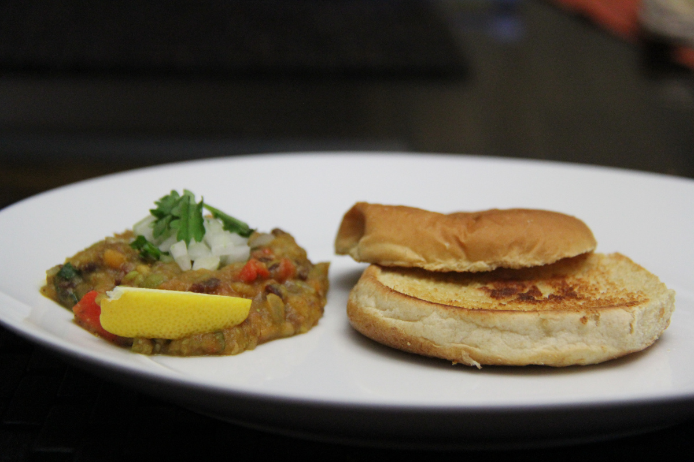
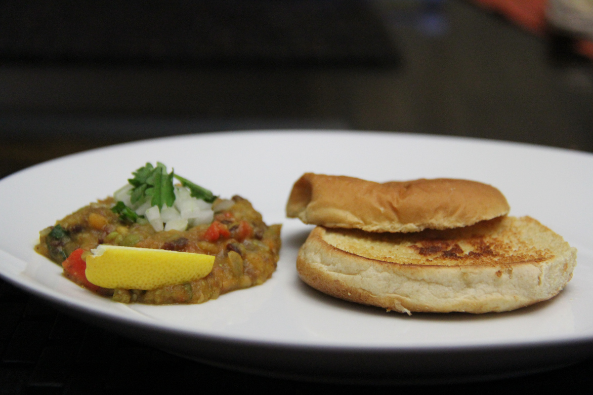

Pav Bhaji(famous street food in mumbai) is my sister's most favorite snack of all.This one is little different because i have added red kidney beans to it.
Ingredients:
Potatoes - 1.
Red kidney beans - 1/2cup(cooked).
Carrot - 1/2 cup.
Peas - 1/2 cup.
Onion - 1/2 cup(finely chopped).
Tomatoes -1/2 cup( finely chopped).
Gginger-garlic paste - 2 tsp.
Green chilies - 2(chopped).
Pav bhaji masala - 2tsp.
Garam masala - 2tsp.
Chilly powder - 1tbsp.
Turmeric powder -1tsp.
Cumin seeds - 1tsp.
Butter to taste.
Salt to taste.
Buns - 12.
Preparation:
Boil all the vegetables Mash and keep aside.
Just lightly mash. Don’t make a puree.
In a pan, add little butter.
When the butter melts, add cumin seeds and onions.
Fry the onions till they become transparent. Now add the ginger-garlic paste.
Fry till the raw smell disappears.
Add chopped green chilies and fry for a minute.
Add the tomatoes and fry them till they become soft and mushy.
Now add the chilly powder, turmeric powder and pav bhaji masala.
Mix the then well.
Now add the mashed vegetables.
Add some water. Keep on stirring and let the vegetable simmer for 7-8 minutes.
If the vegetable becomes too dry and then add some more water.
Slice the buns .
Butter the buns nicely so that you will get tastier buns.
Toast then in a flat pan.
Plate the buns and the gravy with some thinly sliced onions.
 
